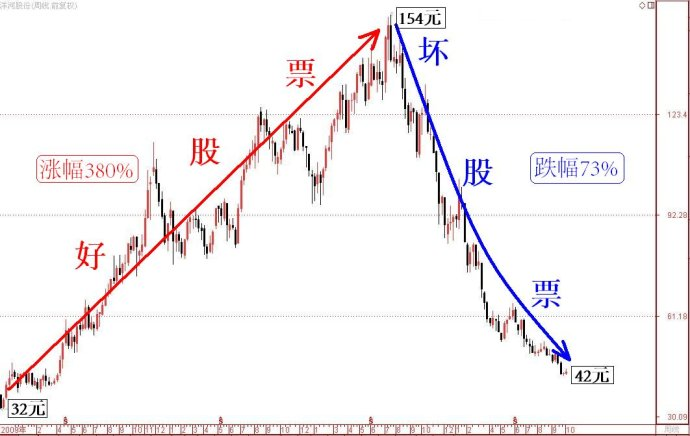

第379篇•关于股票价值与价格的深度分析（1）
谷为陵
最近一段时间，我写博客很少，除了忙之外，还有一个更重要的原因，那就是我在冷静地思考一些投资方面的问题。其中，该怎样阐述我的主升浪战法，是我一直在想的最重要的问题。在前不久，我讲述了一部分主升浪的形态学与动力学的问题，这属于技术层面的问题，这个问题一旦开启，就必须讲很多内容，但我想，现在就展开讲技术层面的问题，似乎还过早，因为，对于大多数普通的投资者着来说，投资大道的问题应该是更基本的，只有将大道搞清楚了，大致的方向就不会错，即使错了，也不至于错得很离谱，所以，今天我还是要再讲讲道的问题。
什么是道？按照中国古典哲学的理解，道乃宇宙的本源，此所谓“道生一，一生二，二生三”。股票投资的道，也就是股票投资的本质思想与方法。股票投资的道是什么呢？我认为，股票投资的道，就是顺应股价运行规律，以获取股票正差价的方法。
显然，不管是何种类型的投资者或者投机者，参与股票市场的目的就是为了赚钱，而赚钱的方法就是获取股票正差价。为了获得正差价，就要买股价能够上涨的股票，这样的股票应该称为什么呢？我认为，应该称为好股票，即，凡是股价能够上涨的股票都属于好股票，而股价不能够上涨甚至还下跌的股票，就是坏股票。由此，股票就只有两种——好股票与坏股票。
我举一个实例加以说明。下图是洋河股份自上市以来的周线图，大家看到其上涨的阶段，涨幅达到380%，这一段绝对是好股票，但是，其后股价在见顶后出现暴跌，跌幅达到73%，这一段是不折不扣的坏股票。可见，好股票与坏股票不仅可以针对不同的股票，还可以针对同一只股票的不同涨跌阶段。

以股价能否上涨来论股票的好坏，这不仅是一个很简便的划分股票的方法，而且其中还蕴含着极为深刻的投资思想。既然要赚钱就要买股价能够上涨的好股票，那么，下一个问题就是，什么样的股票股价能够上涨？或者说，好股票的股价为什么能够上涨？或者说，什么样的股票能够成为好股票？其实，不管这个问题怎么变着法儿问下去，其核心问题实质上就是一个——股价因何上涨？
这个问题可是一个非常复杂的问题，复杂到几乎难以回答。为什么呢？因为股价有很多种的波动，对于占比很大的小波动，很难找到确切的原因，基本上属于随机性波动，正缘于此，有效市场理论就认为股价是随机运动的。作为实战派，我们可以不理会那些随机的小波动，我们应该关心的是那些振幅或者说涨幅很大的大波动，这类大波动，或者说大波段的运动，一般可以归为主升浪的范畴。好了，主升浪的概念就顺利的引出来了。其实，那些股价能够大幅上涨的好股票，就是拥有一大波主升浪的股票，这类股票也可称为牛股与黑马股。
所以，为了分析好股票，或者说为了分析牛股与黑马股股价上涨原因，我们只需要分析它们主升浪的成因就可以了。这就是主升浪战法的由来。
为了分析股价上涨的原因，就要研究与股价上涨相关的一切因素。根据我的研究，影响股价的最基本的因素，就是股票价值，这个股票价值是指我提出的整体价值。整体价值=内在价值+投机价值，可以如下公式表示：
公式1：V整体=V内在+V投机
其中，V内在有三种情况：V内在＞0（正值）、V内在=0、V内在＜0（负值）；V投机也有三种情况：V投机＞0（正值）、V投机=0、V投机＜0（负值）。
股价与整体价值是什么关系呢？我认为股价与整体价值是密切相关的，可以用“股价=X*整体价值”的公式表示，或者用如下公式表示：
公式2：P=X*V整体=X(V内在+V投机)
其中，P代表股价，X为系数，其数值可为X＞1、X=1、X＜1三种。
公式2就将股价与整体价值的关系全部表述清楚了，若我们分为各种情况进行讨论，就能够将股票价值与价格的关系完全理顺，这对于股票估值是意义重大的。（未完待续）